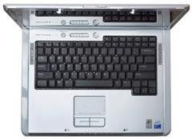

Už rok vlastním notebook Dell Inspiron 6400. Tedy už o nějaký ten měsíc více jak rok, ale vzhledem k tomu, že mi slečnu nenahrazuje, s výročími to společně nějak nepřeháníme. Dokonce chudák ani po roce nemá jméno – neříkám mu ani Hildo, ani Věnceslave. V síti se hlásí nudně jako lm-laptop. Jak bych po roce zhodnotil tento svůj úlovek v moři notebookového trhu? Mmmm… Řekl bych, že jsem spokojen :) .
Notebook využívám k práci a na školní záležitosti. Z her nemám ve svých Windows ani minolovku… Chci s ním cestovat, takže je pro mne důležitá konstrukce a baterka. Jinak jsem nějaké velké nároky neměl. Chtěl jsem dost paměti, na procesor jsem nároky neměl a přál jsem si širokoúhlý displej kvůli grafice. Ještě dodám, že asi v polovině života jsem dokoupil RAM a vyměnil z 512 MB na 2 GB (A propos, nechcete někdo pětsetdvanáctku DDR2 2Rx16 667 MHz? Taková zelená, prý z Malajsie ;) ). No – jak mi kdysi dávno řekl šéf v mé někdejší práci, nakonec člověk stejně zjistí, že pomalu jediný parametr, který ho vlastně zajímá, je skutečnost mám notebook vs. nemám notebook.
Plus
- konstrukce je na cenu notebooku výborná – ač plastová, tak vcelku pevná
- multimediální tlačítka vepředu – velmi návykové ovládání, navíc je lze mačkat i v případě, že je book zavřený
- perfektní repráčky – zapomeňte na ostudné, chrochtající aparatury většiny notebooků, DELLík se pyšní (na to, že jde o book) dokonalým zvukem a hlasitostí
- když se mi jednou přehřál, prostě se vypl… zapnul jsem jej a on mi akorát řekl něco ve smyslu „bylo mi horko, tak jsem to zalomil, protože jsem chytrý DELL“ :)
- klasické rozložení klávesnice
- oproti šmejdům z dílny Acer/ASUS apod. má geniální rozložení portů a vůbec celé povedené šasi
Minus
- displej má příšerný úhel pohledu a dostávají se pod něj nečistoty, což je dle servisu nereklamovatelná závada… nicméně tyto problémy má i Apple , vakuované notebooky se asi nedělají :(
- ač je konstrukce docela povedená, mohla by být tužší, barva by nemusela pod potem ruky slézat a lak by se nemusel dát tak rychle poškrábat i se vcelku ohleduplným zacházením
- nemá infra, což mi, když jsem vlastnil ještě Siemens M65, vadilo (ten telefon totiž zase nemá BT)
- někdy mi vynechává levý repráček, ale stačí trocha násilí a hned se zase sám nahodí :D
Děleno, krát, odmocnina
V nákupu vám tento článek asi nepomůže, protože book už není v prodeji a jeho nástupci mají docela odlišné parametry. Nicméně, pokud nějakého svého placatého vlastníte, jistě se zajímáte… no jak je to v tom profláklém vtipu:
Povídají si dva informatici: „Představ si, včera jsem se seznámil s nádhernou blondýnou…“ „No nekecej…“ „Pozval jsem ji k sobě, trochu jsme pili, objal jsem ji…“ „A co dál?!“ „Najednou mi říká: »Svlíkni mě!«“ „Téééda…“ „Svlíknul jsem jí teda sukni, kalhotky, pak jsem ji posadil na stůl vedle notebooku…“ „Nekecej, ty sis koupil nový notebook?! Co má za procesor…?“
 Kindle
Kindle